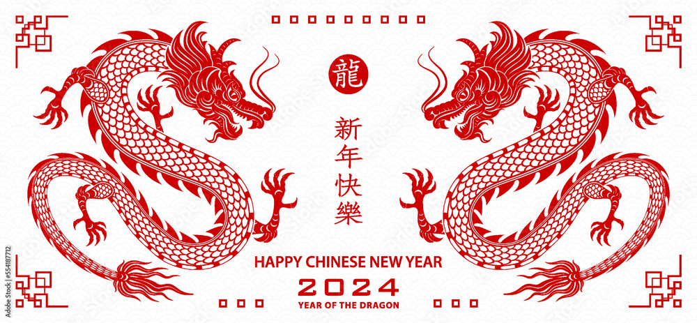

2024’s Lunar New Year took place on the 10 th of February, however festivities lasted another 15 days, ending with the lantern festival on the 25th. Though often referred to as “Chinese New Year” it is classed as a national holiday in many Asian countries such as Korea, Singapore, Malaysia and Thailand and is celebrated by families all over the world.
As based on the Chinese Zodiac Calendar which rotates every 12 years, 2024 is the year of the dragon. In Chinese culture, the dragon is the most popular animal, representing strength, good luck and even control over the weather. This is because within the zodiac story, in which the Jade Emperor made 12 animals race across a river to have a year named after them, the dragon, despite being able to fly, came in 5 th due to stopping to help a village suffering from a drought, a noble and selfless deed.
During Lunar New Year, families often travel long distances to get together and celebrate. The reunion dinner is viewed as a very important part of the festivities, with every family putting on a banquet no matter how harsh the previous year has been. Traditional food varies in different areas however some popular dishes include meat and vegetable dumplings, fish, and New Years Cake which is made from sticky rice and sugarcane. The mandarin pronunciation for New Years Cake (Nian Gao) sounds similar to “Year High” and is therefore viewed as a food of good luck.
Other popular activities include watching fireworks, burning incense to worship your ancestors, telling stories and giving presents. It is tradition for adults to gift children with red envelopes containing money. Dragon and Lion dances are also a popular event to attend, they represent driving away evil spirits and blessing communities with good luck. The dances include wearing elaborate and colourful costumes and singing which is enjoyed by all ages. 新年快乐!
